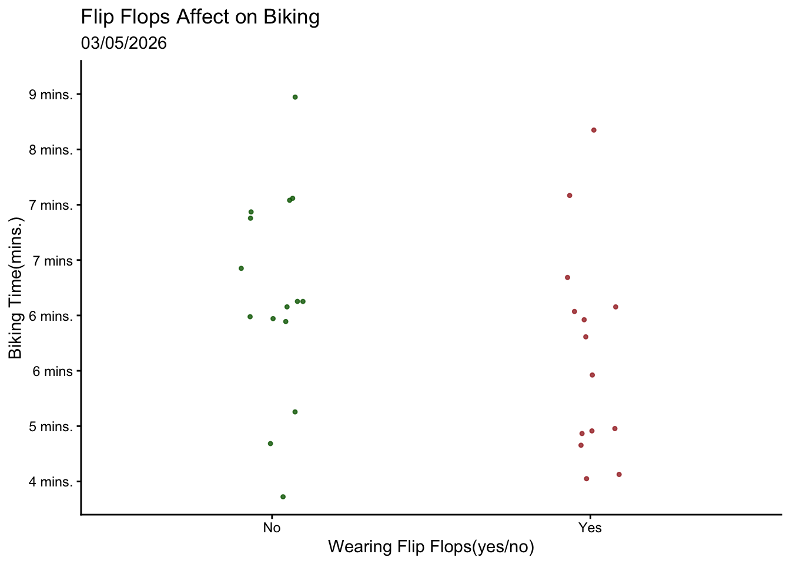
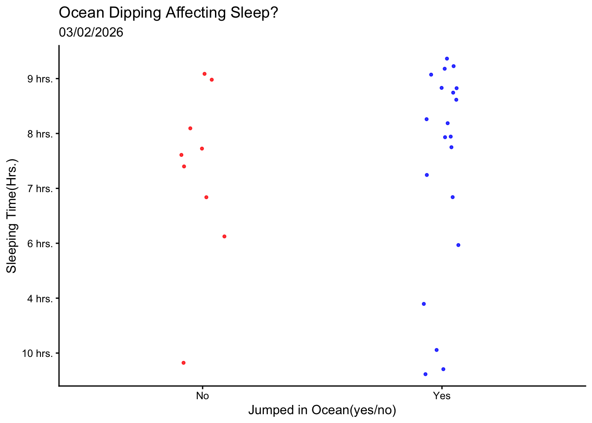
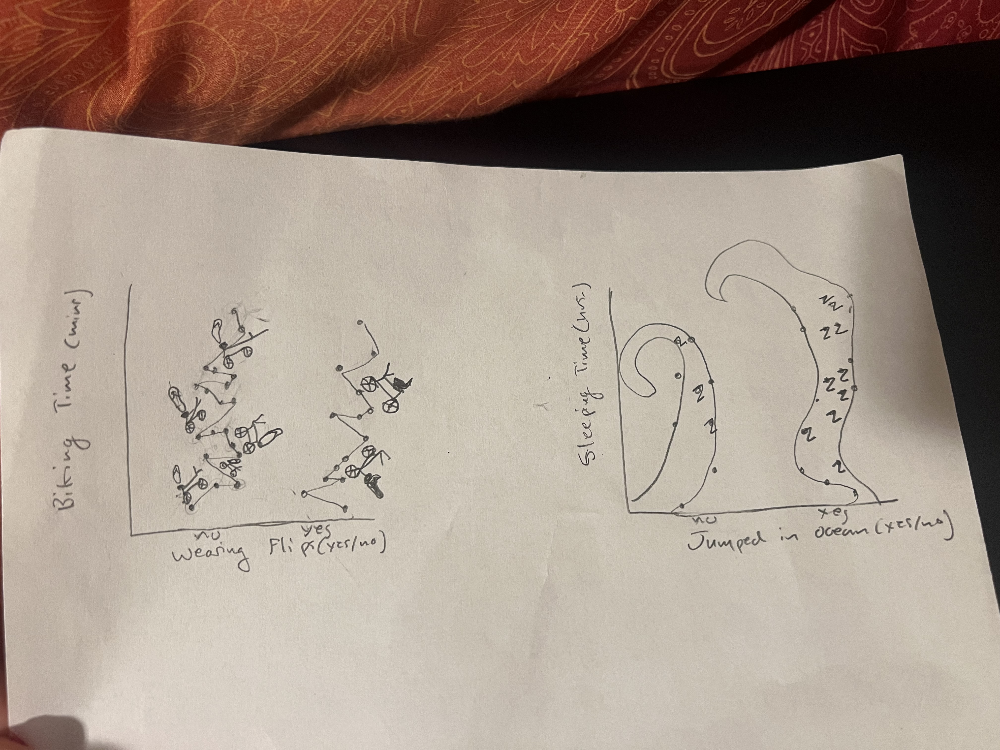
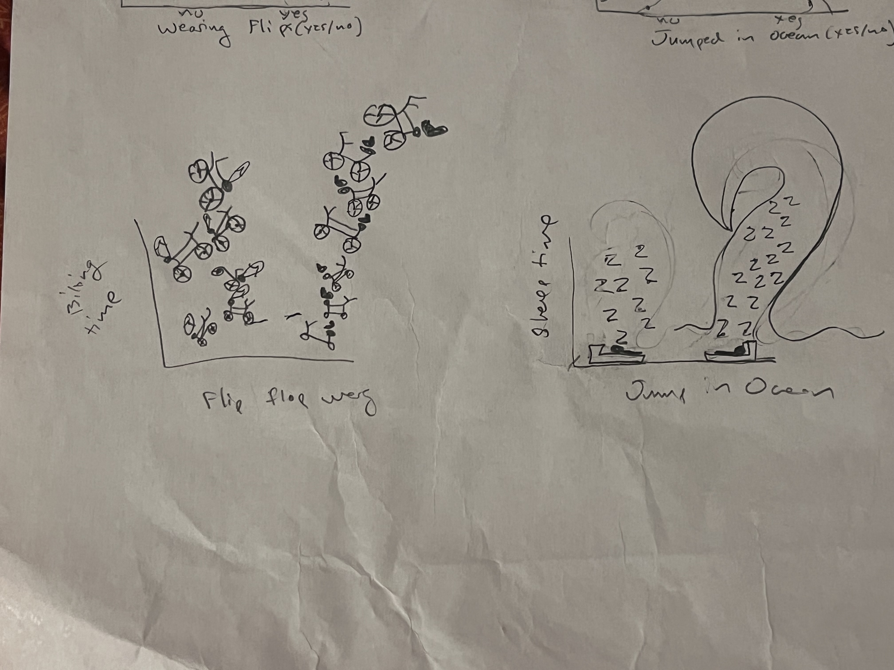

library(tidyverse)#general use for data wrangling, cleaning, etc.
library(janitor)
library(calecopal)
library(readr)
salinity<- read_csv("data/salinity-pickleweed (1).csv")
my_data_autrin_2 <- read_csv("data/my_data - autrin 2.csv")
my_data_2_autrin <- read_csv("data/my data 2 - autrin.csv")Homework 3
Set Up
Problem 1
a. The two appropriate tests are the Pearson’s correlation and the Spearman rank correlation. Pearson’s is a parametric test that would assume that the salinity and California pickleweed biomass are both continuous variables with a normally distributed relationship measuring the strength of linearity. The Spearman is a non-parametric test that would measure the monotonic relationship between these two variables using ranks.
b.
ggplot(data = salinity, #data set to plot
aes(x = salinity_mS_cm, #set x-axis
y = pickleweed, #set y-axis
color = salinity_mS_cm)) +
geom_point(color = "tan3") + #create scatterplot and channeg color of points
theme_minimal() + #Put background as white
labs(x = "Soil Salinity(mS/cm)", #name x-axis
y = "Pickleweed Biomass(g)", #name y-axis
title = "As Salinity Increases Biomass Increases") + #Make title
theme(legend.position = "none") #remove legend
c.
pickleweed_model <- lm( #creating model object and creating linear model function
pickleweed ~ salinity_mS_cm, #formula
data = salinity #pulling data from "salinity"
)par(mfrow = c(1,2)) #display plots ina a 1x2 grid
plot(pickleweed_model) #plotting model data

The residual graphs show that the data has homoscedasicity and a clear normal distribution between the two variables . This means the Pearson’s correlation test will be the most effective.
cor.test(salinity$salinity_mS_cm,salinity$pickleweed, # doing a coorelation test pulling from salinity data set
method = "pearson") # using Pearson's coorelation test
Pearson's product-moment correlation
data: salinity$salinity_mS_cm and salinity$pickleweed
t = 2.8979, df = 21, p-value = 0.008605
alternative hypothesis: true correlation is not equal to 0
95 percent confidence interval:
0.1568265 0.7757682
sample estimates:
cor
0.5344778 I checked fro normality and homoscedasticity in the qq plot and residual vs fitted plots. This would prove a normal distribution of the variables to justify using the Pearson’s correlation test
d.
For these variables we used the Pearson’s coorelation test because both variables were continious and showed normal distirbution. We found a moderate relationship between soil salinity(mS/cm) and pickleweed biomass(g)(Pearson’s r = 0.53, t(21) = 2.9, p = 0.01, ⍺ = 0.5). This shows that the correlation between salinity and biomass is significant which indicated that higher salinity soils relate to pickleweeds with larger biomass.
e.
Larger, heavier pickleweeds have a clear positive relationship with soil salinity. This means to have the greatest success in repopulating the pickleweeds we should plant them in places with higher salinity.
f.
cor.test(salinity$salinity_mS_cm,salinity$pickleweed, # doing a coorelation test pulling from salinity data set
method = "spearman") #using the spearman rank coorelation
Spearman's rank correlation rho
data: salinity$salinity_mS_cm and salinity$pickleweed
S = 824, p-value = 0.003426
alternative hypothesis: true rho is not equal to 0
sample estimates:
rho
0.5928854 By doing the alternative test( The Spearman rank correlation) the results would be very similar and would both reject the null hypothesis that the two variables have no relation to each other. We found a moderate relationship between soil salinity(mS/cm) and pickleweed biomass(g)(Spearman’s r = 0.59, t = 824, p = 0.003, ⍺ = 0.5).
Problem 2
a.
Flipflop_data <- my_data_autrin_2 #Changing data set name
Flipflop_data <- Flipflop_data[-1,] |> #removing N/A column from data set
clean_names() |> #cleaning names to all lowercase _
select(wearing_flips,biking_time_mins) #selecting response/predictor variables
ggplot(data = Flipflop_data, #pulling from this data set
aes(x = wearing_flips, #x-axis
y = biking_time_mins, #y-axis
color = wearing_flips)) + #colored points
geom_jitter( #plot jittered points
width = 0.10,
size = 0.9,
alpha = 0.8) +
scale_color_manual(values = c("No" = "darkgreen", #changing point fill colors from default
"Yes" = "brown")) +
labs(
x = "Wearing Flip Flops(yes/no)", #name x-axis
y = "Biking Time(mins.)", #name y-axis
title = "Flip Flops Affect on Biking", #set title
subtitle = "03/05/2026") + #add subtitle
theme_classic() + #change background to white
theme(legend.position = "none") #remove legend
Biking time(in mins.) calculated based on individual instances of wearing flip flops(n=30). Green points indicate non wearing flip flop times and red points indicate wearing flip flop times. The most recent calculated time was on 03/05/2026
Sleep_data <- my_data_2_autrin #Changing data set name
Sleep_data <- Sleep_data[-1,] |> #removing N/A column from data set
clean_names() |> #cleaning names to all lowercase _
select(jumped_in_ocean_yes_no, hours_of_sleep_hrs) #selecting response/predictor variables
ggplot(data = Sleep_data, #pulling from this data set
aes(x = jumped_in_ocean_yes_no, #x-axis
y = hours_of_sleep_hrs, #y-axis
color = jumped_in_ocean_yes_no)) + #colored points
geom_jitter( #plotting jittered points
width = 0.10,
size = 0.9,
alpha = 0.8) +
scale_color_manual(values = c("No" = "red", #changing point fill colors from default
"Yes" = "blue")) +
labs(
x = "Jumped in Ocean(yes/no)", #name x-axis
y = "Sleeping Time(Hrs.)", #name y-axis
title = "Ocean Dipping Affecting Sleep?", #add title
subtitle = "03/02/2026") + #add subtitle
theme_classic() + #background to white
theme(legend.position = "none") #remove legend
Sleeping time related to jumping in the ocean. Red points show days not jumped in the ocean and blue points show days jumped in the ocean(n=30).
Problem 3
a.
For my biking data, I am thinking of connecting my scatter plot to make a bath and have my no side be flip-flops riding bikes and my yes side be shoes riding bikes . For the sleeping data, I’m thinking of connecting the points to make waves and change all the points inside into z’s. The idea would be to include my main variables with the points on the graph.
b.

c.

d.
For my final ideas I changed my two graphs. For the biking one, I made each point a bike wheel and made it so the wheels got bigger the higher they went(indicating more time), I still had flip flops riding the “yes” bikes and shoes riding the “no” bikes. For the sleeping one, I put a bed under the points and made all the points into Z’s, and on the yes side i drew the bed and z’s inside a wave. This was a sketch that was sparked by my original idea. I wanted a cartoon sort of idea that involved both variables.
e.
Click “view” to see slides